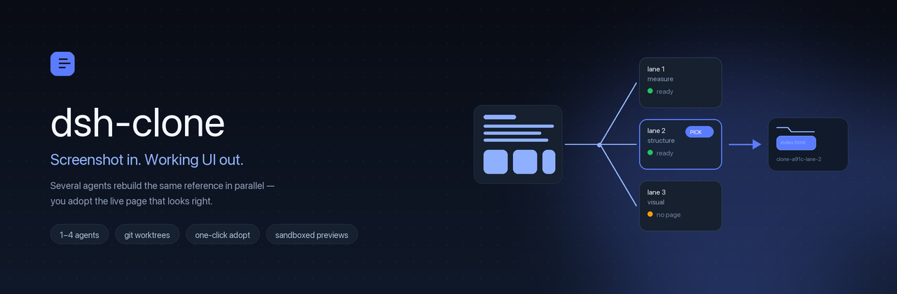
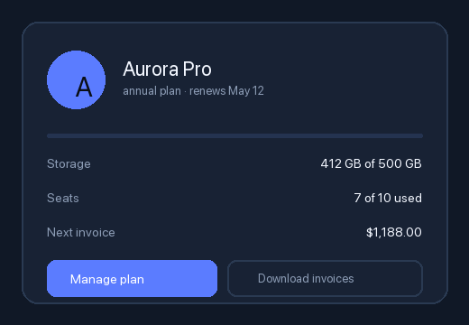

Paste a screenshot of any interface. Run /clone 3. Three agents rebuild it in parallel —
each in its own isolated git worktree. Every result is rendered and scored against the reference,
and you adopt the page that looks right. It is already a working page: plain HTML, CSS and vanilla JS.

A real run, not a mock
Left: the screenshot a person pasted. Right: the page the plugin delivered and the plugin's own headless render of it. No retries, no edits — one command, one adopted lane.

A billing card, 520×360, built in one lane: one file, no assets, no JS. The bigger run — a sign-in screen with a photo-free illustration — landed at 92.7% and is open in the browser too.
Sign-in screen900×620 reference · one adopted lane · rendered at the reference's own size
Billing card520×360 reference · the lane's own layout spec paid off · one file, no assets
Score suggests, you decideThe percentage ranks attempts. It never certifies a page — that is your call.
How it works
One attempt is a lottery: you cannot tell whether the model misunderstood you or simply chose a different solution, because you only ever see one.
Paste a screenshot into the conversation, then /clone 3. Or point at a file: /clone 2 ./mock.png. The last image is the spec.
Measure first · structure first · visual first · component first. Inside a repository each lane is a real git worktree on its own branch — nothing leaks between attempts.
Each delivered page is screenshotted by an installed Chromium browser, decoded, and compared with the reference on a coarse colour grid.
One click copies the chosen lane into your workspace as clone-ab12-lane-2/ — no .git, no dependencies, no scratch files. Open it and it runs.
Not a self-report. The plugin drives headless Chrome itself, then compares pixels on a 48×32 colour grid.
Lanes live in worktrees and in .dsh-clone/. No commit, no checkout, no reset on your branch — a test asserts exactly that.
The Clone tab shows the reference beside every lane's actual page in an iframe, with strategy, timing, tools and tokens.
node_modules, .venv and vendor are symlinked into each lane. Three lanes do not mean three installs.
Every builder gets an effort budget and a wall-clock limit. A lane that keeps polishing is stopped and its finished page is still delivered and scored.
Model-written pages are served under a sandbox CSP and mounted with sandbox="allow-scripts": they cannot reach your cookies, storage or the Harness API.
Trust
lanes: 2 is a reasonable everyday setting.Install
Requires a DeepSeek Harness profile with subagents (the dsh-base bundle ships the spawn backend) and Node 20+. Scoring uses an installed Chromium-family browser when present.
Settings → Plugins → Add plugin, then type the package name.
dsh-clone
Turn on Custom plugin indexes, add this URL, then install from the Discover tab.
https://raw.githubusercontent.com/egorfedorov/dsh-clone/main/index.json
Clone the repository and install the bundle from its directory.
git clone https://github.com/egorfedorov/dsh-clone
Or take the release tarball: dsh-clone.tgz. Updating: the market reports update-available; an upgrade is a reinstall, and your work lives in the workspace, so nothing is lost.
Questions
git worktree on its own branch under dsh-clone/; adopted output is copied into a new folder. A test builds a throwaway repository and asserts that your dirty file, your branch and your HEAD are untouched.Плагин для DeepSeek Harness: скидываешь скриншот интерфейса, пишешь /clone 3 — три агента параллельно собирают его в изолированных git worktree. Каждая готовая страница рендерится в headless-браузере и сравнивается с эталоном; лучший процент предлагается, но выбираешь ты. Выбранная версия копируется в рабочую папку как готовая статическая страница.